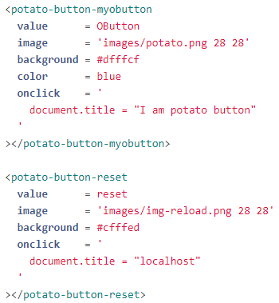
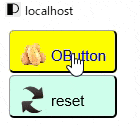
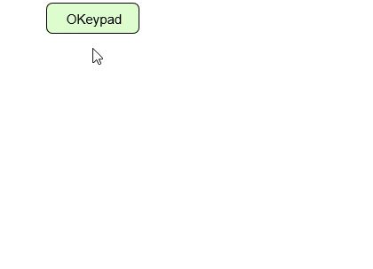
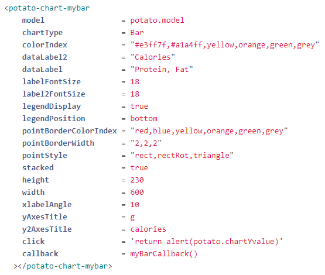
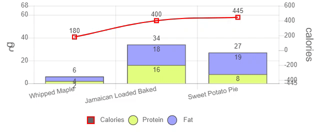

Potato.js
The JavaScript Library that turn complicated code into something more joyful.
potato javascript is the another way of coding the web application.
It extend the HTML code with custom tag.
It group the relevant code into one location (a html tag) to make the code much easier to maintain
and to let you write less code and keep your code simple to save your time on building application.
It is easy to learn, use and master.
複雑なコードをより楽しいものに変えるのJavaScriptライブラリです。
ジャガイモJavaScriptは、カスタムタグでHTMLコードを拡張して、
Webアプリケーションを作成するのJavaScriptです。
関連するコードを1つの場所（htmlタグ）にグループ化して、コードの管理
をはるかに容易にし、コードの記述を減らしてコードをシンプルに保ち、アプリケーションの構築時間を節約します。
習得、使用、習得が簡単です。
Getting Started 入門
The basic syntax of the code is looked like this:
コードの基本的な構文は次のようになります。
The objects of potato.js:
- ■ button - OButton
- ■ calendar - OCalendar
- ■ chart - OChart
- ■ keypad - OKeypad
- ■ list - OList
- ■ menu - OMenu
- ■ table - OTable
- ■ text - OText
＜potato-button-btnid/＞
＜potato-calendar-dateid/＞
＜potato-chart-chartid/＞
＜potato-keypad-keypadid/＞
＜potato-list-listid/＞
＜potato-menu-menuid/＞
＜potato-text-textid/＞
With these you can create some simple application as below:
これらを使用して、次のような簡単なアプリケーションを作成できます。

Example 01: OButton
For example if you want to create a button to set the document title to "I am potato button" you just write the following code in html document:
|  |  |
※You can use the keyword "potato" or just "o" as the [system name]
for example < o-button-mybutton /> also will do.
I call it OButton
Example 02: OKeypad
Create a text box object with input keypad

|
 |
Example 3: Create a bar Chart object (i.e. OChart)
|  |  |
Installing
Show you how to setup Apache Web Server and some configuration on the httpd.conf and php.ini
to let you use PHP to talk with your server to fetch the database data.
Built With
potato javascript requires jquery-3.4.1.js or later and jquery-ui.js.
https://jquery.com/download/ or
https://github.com/potatoscript/potato.js
To create chart object with potato the chart.js was required and the library can be obtained from
https://www.chartjs.org/ or
https://github.com/potatoscript/potato.js
Contributing
- Potato.JavaScript Tutorial 001 - Potato.js Introduction
- Potato.JavaScript Tutorial 002 - Setup Apache Web Server & install potato.js
- Potato.JavaScript Tutorial 003 - Setup Project & Create Object
- Potato.JavaScript Tutorial 004 - Create OButton & OText
- Potato.JavaScript Tutorial 005 - Potato Object Review & OList
- Potato.JavaScript Tutorial 006 - OList & PostgreSQL part 1 setup PostgreSQL
- Potato.JavaScript Tutorial 007 - OList & PostgreSQL part 2 setup php.ini
- Potato.JavaScript Tutorial 008 - OTable part 1 create HTML table element
Authors
I am BRUCE LIM.K.S. (林 建成) the author from SARAWAK SIBU currently live in JAPAN since 2004,
I graduated from engineering background (Mechanical Engineering at Coventry University UK),
but my final year's undergraduate project had led me to the world of programming.
(Developing software to find the natural frequency and damping factor from the input data
as provided from some vibration measurement device.) It combined the fields of engineering and programming.
The result was good and encouraged me continue to develop my programming skill until now.
It is my first JavaScript Library, which was developed since year 2010.
I call it potato javascript or o script (o=potato, why because its as simple as potato)